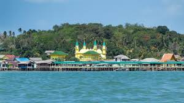

Sejarah

Belum terdapat catatan tertulis tentang asal mula nama pulau ini. Namun, dari cerita rakyat setempat, nama ini berasal dari nama hewan sebangsa serangga yang mempunyai sengat. Menurut cerita tersebut, ada para pelaut yang melanggar pantang-larang ketika mengambil air, maka mereka diserang oleh ratusan serangga berbisa. Binatang ini yang kemudian dipanggil Penyengat dan pulau tersebut dipanggil dengan Pulau Penyengat. Sementara orang-orang Belanda menyebut pulau tersebut dengan nama Pulau Mars. Tatkala pusat pemerintahan Kerajaan Riau bertempat di pulau itu ditambah menjadi Pulau Penyengat Inderasakti. Pada 1803, Pulau Penyengat telah dibangun dari sebuah pusat pertahanan menjadi negeri dan kemudian berkedudukan Yang Dipertuan Muda Kerajaan Riau-Lingga sementara Sultan berkediaman resmi di Daik-Lingga. Pada tahun 1900, Sultan Riau-Lingga pindah ke Pulau Penyengat. Sejak itu lengkaplah peran Pulau Penyengat sebagai pusat pemerintahan, adat istiadat, agama Islam dan kebudayaan Melayu.
Dari sejarahnya, Pulau Penyengat merupakan hadiah perkawinan dari Sultan Mahmud Syah kapada istrinya Engku Putri Raja Hamidah pada 1805.Pada Sultan Mahmud mulailah dibangun pemukiman yang berada di pulau ini. Sebelum diberikan sebagai hadiah, Sultan Mahmud sebagai Yang Dipertuan Muda IV membangun beberapa benteng, diantaranya Benteng Bukit Kursi. Benteng tersebut untuk melindungi dari serangan Belanda. Tentunya pemberian pulau ini sebagai hadiah menarik perhatian, sehingga Yang Dipertuan Muda Jaafar (1806-1832) memindahkan tempat kedudukannya di Ulu Riau (Pulau Bintan) ke Penyengat. Sedangkan, Sultan Mahmud pindah Daik-Lingga. Pada 1857, kondisi Kerajaan Melayu Riau-Lingga sudah tidak stabil karena campur tangan Belanda dalam pemerintahan sehingga Sultan Abdulrahman Muazamsyah memindahkan pusat kerajaan Melayu Riau-Lingga dari Daik ke Penyengat pada 1900.
Geografis

Secara astronomis Pulau Penyengat terletak pada 0º 55' 28” LU- 0º 55' 56” LU dan 104º 24' 30” BT-104º 25' 38” BT yang memiliki panjang 2 KM dan lebar 1 KM serta memiliki letak geografis yang strategis karena bersebrangan langsung dengan Singapura dan Malaysia. Berjarak kurang lebih 2 km dari pusat kota. Pulau ini berukuran panjang 2.000 meter dan lebar 850 meter, berjarak lebih kurang 35 km dari Pulau Batam. Pulau ini dapat ditempuh dari pusat Kota Tanjung Pinang dengan menggunakan perahu bermotor atau lebih dikenal pompong yang memerlukan waktu tempuh kurang lebih 15 menit.
Kuliner
Adapun beberapa kuliner khas Pulau Penyengat seperti Nasi Dagang, Air Dohot dan kue Deram-Deram.
Nasi Dagang

Nasi Dagang adalah olahan yang hampir sama dengan nasi uduk. Tetapi bedanya, Nasi Dagang diguyur dengan kuah kari dan halba atau santan dari ikan tongkol atau ikan yg sudah di salai atau diasap.
Air Dohot

Air Dohot kini dapat dengan mudah diperoleh dan dinikmati oleh masyarakat. Minuman ini tidak hanya memiliki rasa yang segar dan manis, tetapi juga memiliki khasiat sebagai obat awet muda setelah melalui uji klinis.Buah-buahan yang terkandung di dalam Air Dohot terdiri dari 10 macam buah-buahan kering. Diantaranya buah dohot, kelengkeng kering, buah kesemek,hingga kismis kuning, Dll. Setelah itu dicampurkan dengan air gula batu.
Kue Deram-Deram

Deram-deram merupakan kue khas dari Kepulauan Riau yang awalnya hanya dihidangkan untuk raja. Kue tersebut merupakan salah satu oleh-oleh untuk pengunjung yang datang ke Pulau Penyengat. Bentuk kue deram-deram seperti donat tetapi dengan ukuran yang lebih kecil.
Peninggalan
Pulau Penyengat merupakan salah satu objek wisata di Kepulauan Riau. Di pulau ini terdapat berbagai peninggalan bersejarah yang di antaranya adalah Masjid Raya Sultan Riau yang terbuat dari putih telur, makam-makam para Yang Di-Pertuan Muda Kerajaan Johor-Pahang-Riau-Lingga, dua diantaranya yaitu makam dari pahlawan nasional Raja Haji Fisabilillah dan Raja Ali Haji (Bapak Bahasa), terdapat juga kompleks Istana Kantor dan benteng pertahanan di Bukit Kursi serta Balai Adat Melayu Kepulauan Riau.
Masjid Raya Sultan Riau

Masjid Raya Sultan Riau atau disebut juga Masjid Sultan Riau merupakan salah satu masjid tua dan bersejarah di Indonesia yang berada di pulau Penyengat, Kota Tanjungpinang, provinsi Kepulauan Riau. Masjid ini merupakan salah satu masjid unik karena salah satu campuran bahan bangunan yang digunakan adalah putih telur. Masjid Sultan Riau ini sudah dijadikan situs cagar budaya oleh pemerintah Republik Indonesia.
Makam Raja Haji Fisabilillah

Raja Haji Fisabilillah (lahir di Kota Lama, Ulusungai, Riau, 1725 meninggal di Kampung Ketapang, Melaka, Malaysia, 18 Juni 1784) adalah salah seorang tokoh Melayu Johor yang terkenal. Ia adalah adik dari Sultan Selangor pertama, Sultan Salehuddin dan paman sultan Selangor kedua, Sultan Ibrahim. Dalam perjuangannya melawan VOC yang menyerang Johor, ia tewas di Teluk Ketapang.Jenazah Raja Haji Fisabilillah dimakamkan di Bukit Bendera Malaka, 36 tahun kemudian anaknya Raja Jakfar memindahkan makam Raja Haji dari Malaka ke Pulau Penyengat.
Balai Adat Melayu Kepulauan Riau

Di Pulau Penyengat terdapat bangunan yang merupakan replika dari bangunan tradisional Melayu. Bangunan ini disebut dengan Balai Adat Melayu Riau, dibangun pada tahun 1985 yang bertujuan sebagai balai pertemuan bagi masyarakat. Bangunan ini terletak di Kampung ladi Pulau penyengat. Bentuk bangunan Balai Adat merupakan jenis bangunan tradisional Melayu Selasa Jatuh Kembar, selain bangunan utama juga terdapat bangunan kecil pendukung sebanyak 4 buah.